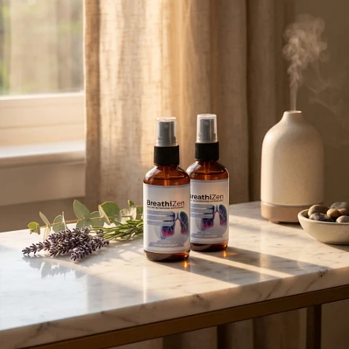

What Is BreathiZen And How Does It Work?
Here is the short answer: BreathiZen is an oral spray supplement in liquid form whose purpose is to support easy breathing, open airways, and healthy lungs. The people it targets are adults who notice that pollen seasons, dusty rooms, or a packed schedule leave their chest feeling tight or their nose blocked, and who prefer a plant-based daily step over a complicated regimen.
Every serving brings together Mullein leaf, Ginger root, and Organic Lemon in extract form. The idea is that these three plants, taken together each morning, help the body keep a calm, comfortable respiratory rhythm throughout the day.
According to the official website, the blend was put together to give the lungs botanical and nutritional backing in a single product. For anyone tired of mixing herbal teas, lozenges, and several sprays, one bottle that covers the routine is the main appeal.
The approach is gradual rather than dramatic. BreathiZen does not claim to work like a medication; it is presented as a gentle herbal habit that, used day after day, supports respiratory comfort and clearer breathing over time.
Reviews shown on the official website mention breathing more freely through the nose and feeling less weight in the chest after a period of steady use, as well as more energy for walks and daily tasks. Experiences vary, and habits like drinking water, moving more, and keeping the house dust-free also play a role.
Practically speaking, you get a 2 oz (60 ml) bottle of respiratory support spray that fits in a bag or a bathroom cabinet and takes seconds to use.
The label states that BreathiZen is produced in the USA, in an FDA-registered facility, using ingredients sourced from different parts of the world. It is meant for daily, long-term use by adults who want a non-prescription way to look after their lungs, with purity and safety as stated priorities.
BreathiZen Ingredients
The formula is short and easy to read. A serving of BreathiZen, which is 4 sprays or 0.60 ml, provides a 154 mg proprietary blend of plant extracts, according to the Supplement Facts panel on the label pictured on the official order page:
Ginger Root Extract: Taken from Zingiber officinale, a root used for generations, here to support respiratory comfort and a calm response in the airways.
Mullein Leaf Extract (10:1): A concentrated extract of Verbascum thapsus, presented by the official website as soothing for the airways, to support clear breathing.
Organic Lemon Extract: Naturally rich in vitamin C and antioxidants, added to support immune defenses and to give the spray a light citrus taste.
The three extracts are meant to complement each other in support of healthy lung function and comfortable breathing. One detail to keep in mind: the sales page and another version of the label also list bromelain, an enzyme from pineapple, and Cordyceps militaris, a mushroom extract, so the label on the bottle you receive is the final word. Non-active ingredients are purified water, glycerin, natural flavors, citric acid, potassium sorbate, and sodium benzoate.
There are no artificial stimulants in the formula, according to the official website, which positions BreathiZen as a simple, non-prescription daily option for lung support.
BreathiZen Side Effects
For most adults, BreathiZen appears to be easy to tolerate. It was created as a natural, measured way to support the respiratory system for people of different ages and routines, particularly those who want a quick daily step for clear breathing and lung comfort rather than strong or harsh products.
The official website says the ingredients are naturally derived and that the formula contains no artificial stimulants or harmful chemical additives. The label adds that it is manufactured in the USA in an FDA-registered facility, details that point to consistent production and attention to safety.
We did not find widespread reports of serious side effects, and BreathiZen is generally regarded as a well-tolerated spray. Because it contains ginger and lemon, people with a sensitive mouth, a delicate stomach, or an allergy to any listed ingredient should begin carefully and stop if they feel irritation. It is not meant to diagnose, treat, cure, or prevent any disease, and it should never replace an inhaler or a treatment your doctor prescribed.
The label asks pregnant or nursing women, anyone under 18, and people with a known medical condition to speak with a physician before using BreathiZen. The official website stresses that this is especially important for those who take medication for asthma, COPD, or high blood pressure.
BreathiZen Dosage
Using BreathiZen takes very little effort: the label calls for 4 sprays, once a day. Because it is a liquid oral spray in a 2 oz (60 ml) bottle, there are no capsules to swallow, no powders, and nothing to prepare.
The directions are to shake the bottle well and then spray 4 pumps (0.60 ml) straight into the mouth or onto the tongue, once daily. The official website recommends doing this in the morning, ideally before the first meal, and keeping roughly the same time each day.
What makes the biggest difference is steady, daily use. Respiratory support is described as something that builds up, so the official website frames BreathiZen as an ongoing habit, and the label says each bottle contains 100 servings.
The routine does not ask for timers, multiple doses, or special steps. One morning serving, combined with good hydration, regular physical activity, and an environment with less smoke and dust, is meant to add up over the weeks.
As with any supplement, do not take more than the recommended amount, and follow the label on your bottle. Store it in a cool, dry place away from light, and skip the bottle if the safety seal is damaged. BreathiZen is designed to work best with consistency and healthy daily choices.
BreathiZen – Refund Policy
Every order of BreathiZen is protected by a 60-day guarantee from the date of purchase, which gives buyers time to see how the spray fits into their routine before deciding.
The details matter here. According to the official refund policy, a refund can only be requested after using the product for at least 30 days, and the request has to be made within 60 days of purchase. Only sealed bottles are accepted, shipping and customs charges are not refunded, return postage is paid by the customer, and a 20% restocking fee is deducted from the order total.
The process step by step: send an email to customer support asking for an authorization code, then follow the return instructions they provide. When the bottles arrive and are checked, the money is returned to the original payment method, and a confirmation is sent by email.
Customer support contact: contact@customercs.com, as printed on the product label. Replies usually arrive within 48 business hours.
Refund timing: after the refund is processed, banks and card issuers may take 5 to 10 business days to show it on the statement.
Since the full refund policy is available on the official website, it is worth reading it before placing an order for BreathiZen.
BreathiZen Customer Reviews
-
 Jessica Martinez — Austin, TXVerified Purchase – 6 Bottles
Jessica Martinez — Austin, TXVerified Purchase – 6 Bottles
“I’ve struggled with seasonal congestion for years, and it always made me feel exhausted and foggy. Since I started using BreathiZen, I can actually breathe clearly through my nose again. It’s like a weight has been lifted off my chest. I use it every morning, and my entire day feels different — more energy, more focus, just better overall.”
-
 James Miller — Chicago, ILVerified Purchase – 6 Bottles
James Miller — Chicago, ILVerified Purchase – 6 Bottles
“I quit smoking three years ago, but my lungs never felt the same. I’d get winded going up stairs and always had this tightness in my chest. BreathiZen changed everything. Within two weeks, I noticed I could take deeper breaths without that uncomfortable feeling. Now I actually look forward to my morning walks instead of dreading them.”
-
 Samantha Lee — Miami, FLVerified Purchase – 6 Bottles
Samantha Lee — Miami, FLVerified Purchase – 6 Bottles
“My allergies used to control my life — constant sniffling, chest tightness, and I could never sleep well because I couldn’t breathe through my nose. A friend recommended BreathiZen, and honestly, I was skeptical. But after just a few days, I noticed a real difference. Now I sleep through the night and wake up actually feeling rested. It’s been a game-changer.”
BreathiZen – Where To Buy
The safest place to buy BreathiZen is its official website, the only sales channel the manufacturer lists. The official website does not send customers to marketplaces such as Amazon, Walmart, or eBay, so listings there should be treated with caution.
Copies sold by third parties can look nearly identical, yet there is no way to confirm their origin, storage, or age, which raises real questions about quality, safety, and the freshness of the ingredients in a liquid herbal formula. Purchases made outside the official source may not be covered by the 60-day guarantee.
That is why most buyers prefer to order BreathiZen directly from the official website. Going straight to the source means receiving the authentic original product, made in the USA, along with customer support and the complete guarantee. The official website also states that every order is a one-time purchase with no automatic renewals or hidden fees.
Before you pay, take a moment to confirm that you are on the official BreathiZen website, so you avoid counterfeit batches and get the formula as the manufacturer intended.
To ensure you’re getting the authentic product, most users choose to visit the official website.
Is BreathiZen A Scam?
From everything the official website and the label show, BreathiZen does not appear to be a scam. It is a genuine oral spray supplement sold through an established retailer and built to support healthy lungs, open airways, and comfortable breathing with regular use.
The ingredients, Ginger root extract, Mullein leaf extract, and Organic Lemon extract, appear in a 154 mg blend on the Supplement Facts panel. They are well known in natural wellness, and each one is named on the label, even though the exact amount of each extract is not disclosed.
The label also says BreathiZen is made in the USA in an FDA-registered facility from globally sourced ingredients, with stated attention to purity, safety, and consistency.
Customer reviews on the official website talk about breathing more easily and feeling lighter in the chest, plus a routine that is simple to keep up. Results will not be the same for everyone, and no supplement can promise a specific outcome or stand in for medical care.
The product comes with a 60-day guarantee, and purchases are one-time, with no automatic renewals, hidden fees, or recurring charges. The refund rules, including the sealed-bottle requirement and the 20% restocking fee, are spelled out on the official website.
For adults who want a quick daily spray to support clear breathing and respiratory comfort, BreathiZen is a reasonable option to consider, especially when ordered from the official website.
For those who want to verify product details or check current availability, the official BreathiZen website remains the safest option.

Check Availability On Official Website